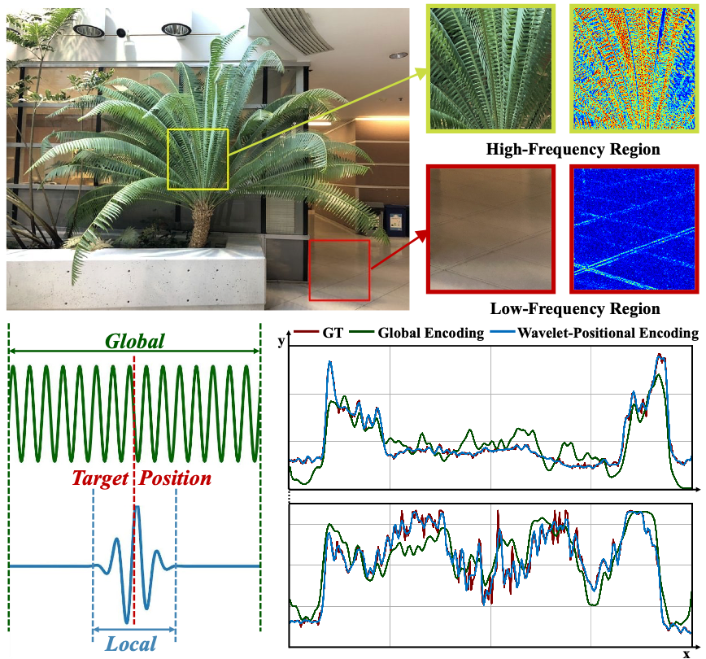
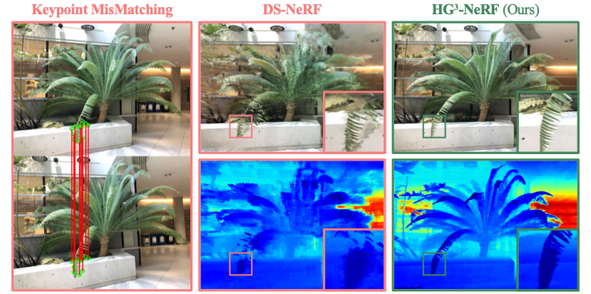
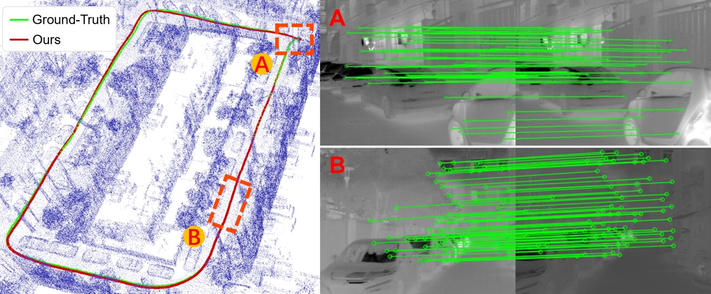

|
|
BiographyI am actively looking for research collaboration. Please feel free to contact me if you feel confused about the future or you are experiencing a hard time. I am always happy to help as I have been in that situation myself.
I am currently a research intern at Xiaolong Wang's Gruop.
I got M. Eng (2021-2024) in CSE Department at Zhejiang University, where I was advised by Prof. Yu Zhang in IAS Lab.
I got my B. Eng (2017-2021) in EE Department at Jilin University, where I spent 4 wonderful years.
I feel extremely fortunate to collaborate with
Dr. Jiarui Xu and Prof. Xiaolong Wang at UCSD,
Dr. Shalini De Mello and Dr. Seonwook Park at NVIDIA Research,
Dr. Yutong Bai and Prof. Angjoo Kanazawa at UCB,
Prof. Weichen Dai at Hangzhou Dianzi University.
They are the ones who introduce me into the world of research and teach me what it means to be a good and honest researcher.
They will always be my role models!
My research interest lies in computer vision, especially in fields of 3D/4D Reconstruction and Generation, as well as the fusion of multimodal data.
I also find human body models such as SMPL and SMPL-X super awesome!
|
News
[2025.05] I have made my final decision for the future. Congratulations to myslef!
[2024.12] Our paper is accepted by AAAI2025!
[2024.04] GAP year starts! Hang on! I will get through these bad days.
[2024.03] I defend my thesis and receive my master's degree!
[2024.02] Our paper is accepted by CVPR2024 as Highlight!
[2023.07] Our paper is accepted by ICCV2023!
[2022.06] Our paper is accepted by IROS2022&RAL as Oral Presentation!
Publications
Representative works are highlighted (# denotes equal contribution)|
AHA: Expressive Animation of Humans Driven by Audio
Zelin Gao,
Jiarui Xu,
Seonwook Park,
Koki Nagano,
Sifei Liu,
Xialong Wang,
Shalini De Mello
Under Review
We present AHA, a novel approach to driving 2D human portrait animation that generates upper body motion, hand gestures, lip movements, and facial expressions.
AHA allows for a versatile solution capable of being driven by audio alone and/or video, where both inputs complement and augment each other.
|
|
|  |
Adaptive Wavelet-Positional Encoding for High-Frequency Information Learning in INR
Hongxu Zhao,
Zelin Gao,
Yu Zhang
AAAI 2025
The implicit representation is incomplete since different components of the signal align with different frequency bands and neural network is proved to inherently converge to low frequency.
Inspired by Wavelet regression, we propose Adaptive Wavelet-Positional Encoding to represent content under different frequency distributions.
|

|
SAP3D: The More You See in 2D, the More You Perceive in 3D
Xinyang Han#,
Zelin Gao#,
Angjoo Kanazawa,
Shubham Goel,
Yossi Gandelsman
CVPR 2024, Highlight
Humans can infer 3D structure from 2D images of an object based on past experience and improve their 3D understanding as they see more images.
Inspired by this behavior, we introduce SAP3D, a system for 3D reconstruction and novel view synthesis from an arbitrary number of unposed images.
|
|
D4-Dreamer: Text-to-Non-Rigid Scene Generation
Zelin Gao,
Qihang Yu,
Yutong Bai
ARXIV 2024
D4-Dreamer is a text-to-non-rigid scene generation framework.
We introduce two separate guidance for scene generation to optimize non-rigid radiance fields, where we drive fantasy content generation from scene content guidance (SDS-MV) and reasonable motion generation from scene motion guidance (VSD-T).
|
|
|  |
HG3-NeRF: Hierarchically Guided Neural Radiance Fields for Sparse View Inputs
Zelin Gao,
Weichen Dai,
Yu Zhang
ARXIV 2023
To represent the neural radiance fields from sparse view inputs,
we propose hierarchical geometric guidance (HGG) to sample volume points with the depth prior
and
hierarchical semantic guidance (HSG) to supervise semantic consistency of the complex real-world scenarios using CLIP.
|
|
Adaptive Positional Encoding for Bundle-Adjusting Neural Radiance Fields
Zelin Gao,
Weichen Dai,
Yu Zhang
ICCV 2023
Adaptive Positional Encoding is proposed to train neural radiance fields from unknwon camera poses (or even initrinics).
The theoretical relationship between Positional Encoding and Fourier Series Regression is investigated to prove that learnable frequencies can improve both camera parameter estimation and NVS qualiy.
|
|
|  |
Thermal-Inertial SLAM for the Environments with Challenging Illumination
Jiajun Jiang,
Weichen Dai,
Xingxin Chen,
Zelin Gao,
Yu Zhang
IROS2022&RAL, Oral Presentation
Thermal images are used in this paper to realize a robust visual SLAM system in challenging environment.
The proposed method, a thermal-inertial SLAM system, represents several improvements, including SVD-based image processing and Thermal-RAFT tracking methods.
|
This page is from Prof. Yuliang Xiu. His website looks really nice! Big thanks!